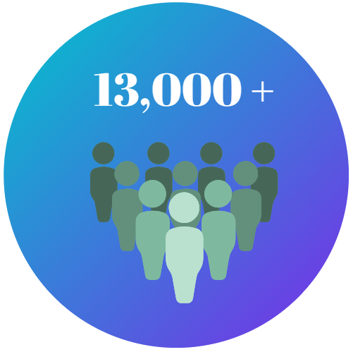
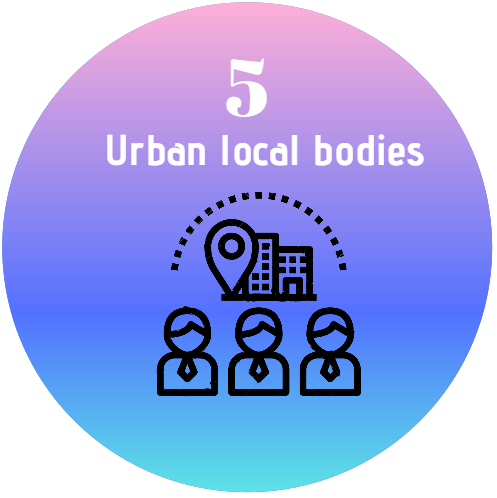
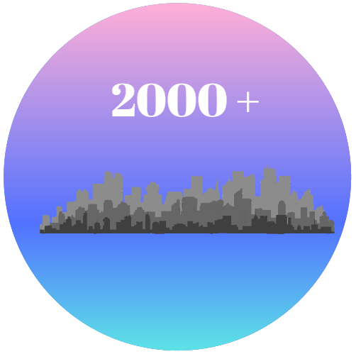

{% extends 'Venter/index.html' %}
{% block title %}About Us{% endblock %}
{% block content %}

<!-- LINEARICONS -->
<link rel="stylesheet" href="../../static/assets/fonts/linearicons/style.css">
<script src="../../static/assets/js/jquery-3.3.1.min.js"></script>
<script src="../../static/assets/js/main.js"></script>
<link rel="stylesheet" href="../../static/assets/css/about_us.css">

<div class="outer-as">
    <div class="inner-as">
        <div class="upper-content">
            <label class="label1">About Us</label>
            <br>
            <hr>
            <label class="label2">
                
                Many civic problems fail to reach resolution because of barriers to submitting a complaint or knowing the right person
                to contact. As a solution to such problems, Venter is an intelligent complaint management system being developed at <b> IIT
                Bombay under the guidance of <a href="https://www.cse.iitb.ac.in/~ganesh/" class="prof-link">Prof. Ganesh Ramakrishnan</a>, 
                in collaboration with <a href="https://www.microsoft.com/en-us/research/lab/microsoft-research-india/" class="msr-link"> Microsoft Research </a> </b> which aims to create a
                platform for categorizing and routing civic complaints to relevant officials. <br><br>
                
                Advances in speech and image understanding have made it possible to create an AI intermediary that speeds up complaint
                categorization and resolution. <br><br>
    
                Venter is currently collaborating with <b> Civis, which is a platform that enables citizens to understand legislation and 
                share their feedback on laws and policy decisions</b>; while providing an avenue for the Government to understand citizen's
                priorities and gather feedback on policies in real time. <br><br>
    
                Venter has also worked with <b>ICMC (I Change My City) which is an online complaint redressal system, where complaints
                posted on their website are routed to MCGM, wherein Venter automates the process of categorizing complaints.</b>
                
            </label>
        </div>   
        <br><br>
        <div class="lower-content">
            <label class="label1">Impact</label>
            <br><hr>
            <div class="row lower-content-bottom">
                <div class="col-sm-3">
                    <div class="col-sm-5">
                        <div>
                           <a href="https://civis.vote/">  </a>
                        </div>   
                    </div>
                    <div class="col-sm-7">
                        <div>
                            
                        </div>   
                        <br> 
                        <div>
                            
                        </div>
                    </div>   
                </div>    
                <div class="col-sm-6 impact_content">                        
                    <label class="label3">
                        <br><br>
                        Civis has already used the response categorization tool to impact the lives of 13,000+ residents of low income 
                        and low literacy bastis in Bandra West, Mumbai, Maharashtra. <br><br><br><br>

                        ICMC has more 8 Million users across nation in more than 2000+ cities and they are active citizens who post complaints
                        within their neighbourhood.  <br><br><br><br>
                        
                        Venter helps ICMC in the segregation of these complaints into various categories thus facilitating the efficient routing
                        of these complaints.
                    
                    </label>
                </div>
                <div class="col-sm-3">
                    <div class="col-sm-5">
                        <div>
                            <a href="https://www.ichangemycity.com/"> </a>
                        </div>   
                    </div>  
                    <div class="col-sm-7">
                    <div>
                            
                        </div>    
                        <br>
                        <div>
                            
                        </div> 
                    </div>   
                </div>     
            </div>            
        </div>   
    </div>
</div>

{% endblock %}